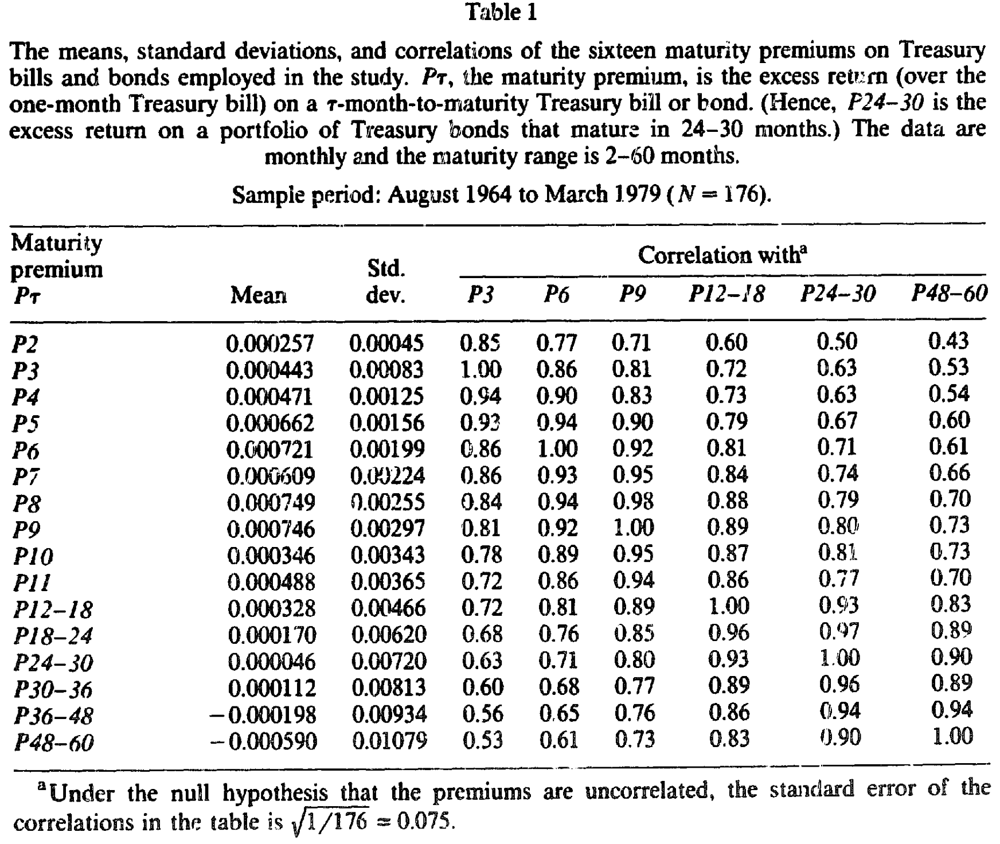
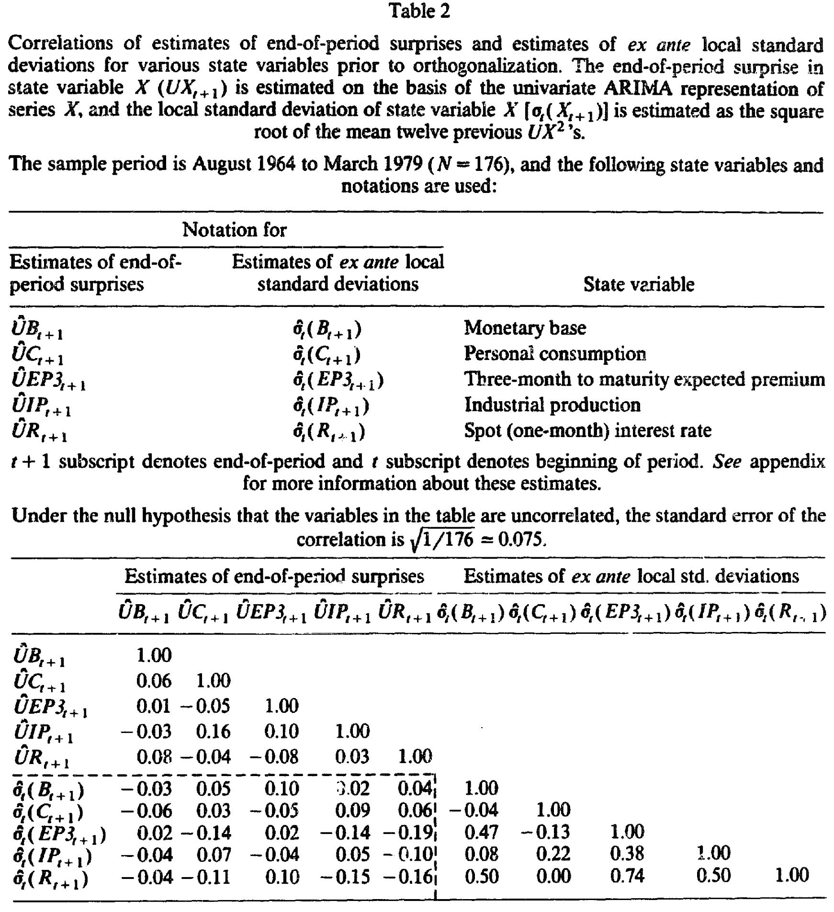
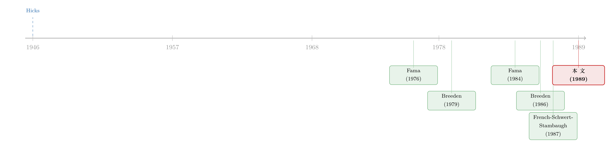

期限溢价的另一半秘密：藏在消费、产出与利率的「波动」里
本文读的是 Lauterbach (1989, Journal of Financial Economics)：国债的期限溢价不只取决于债券对消费、工业产出、即期利率这些宏观状态变量「冲击」的敏感度，还取决于这些变量的事前条件波动率；而且，波动率前面的系数应当与冲击前面的系数成比例。实证里，即期利率与预期溢价的冲击把溢价压得很低（t 值在 −5 到 −20 之间），但唯一能稳定地、显著地为溢价定价的「波动率」，竟是消费的波动率。
1 引言：一条曲线，三个谜
先抛一个老问题。买一张两个月到期的国债，和买一张五年到期的国债，预期收益为什么不一样？更让人头疼的是：这个差额——也就是「期限溢价」——还会随时间忽大忽小。
Fama（1984a,b, 1986）和 Shiller、Campbell、Schoenholtz（1983）把这件事钉成了两条经验事实：第一，国债的预期持有期收益是到期期限的函数；第二，所谓期限溢价（term premium，定义为多月期国债相对一个月期国债的预期超额收益）会随时间波动。换句话说，期限溢价既不为零、又随期限变、还随时间动。三个谜，挤在同一条收益率曲线上。
传统的解释可以追溯到 Hicks（1946）的流动性偏好理论：期限溢价是一种风险补偿，期限越长、暴露的风险越大，所以要更高的预期收益。但 Hicks 没说清——到底是什么风险？
本文要做的，就是把这个「什么风险」说具体。作者的主张干净利落：期限溢价是风险补偿，而这风险，就是债券回报对消费、工业产出、即期利率这些基本宏观状态变量冲击的暴露；并且，这些风险的「价格」会随状态变量的条件波动率一起涨落。（关于把预期收益绑到宏观周期上这一思路，可参见《强经济里收益反而低》。）
这听起来像又一个把 CAPM 往期限结构上硬套的尝试。但真正关键的一步，是它给出了一个别人没有的、可以被数据证伪的预测——比例性。这一点，我们后面会反复回来讲。
2 模型：从「冲击」到「波动率」的三级跳
整篇文章的骨架是一个三步推导。我们一步步走。
第一步，回报生成过程。 持有一张国债，名义现金流的时间和大小都是确定的，唯一的风险来自下一期的名义贴现率会不会偏离今天的预期。作者把多月期国债的回报写成对一组状态变量冲击的线性反应：
$$ H^\tau_{t+1} = E_t H^\tau_{t+1} + \beta^\tau_c\,UC_{t+1} + \beta^\tau_{ip}\,UIP_{t+1} + \beta^\tau_b\,UB_{t+1} + \beta^\tau_r\,UR_{t+1} + \beta^\tau_{ep}\,UEP_{t+1} + \sum_i \beta^\tau_i F_{it+1} + \varepsilon^\tau_{t+1} $$
这里 \(H^\tau_{t+1}\) 是 \(\tau\) 月到期债券在 \(t\) 到 \(t+1\) 之间的回报；\(UC\)、\(UIP\)、\(UB\)、\(UR\)、\(UEP\) 分别是消费、工业产出、货币基础、即期（一个月）利率、预期溢价的创新（unexpected change，即意料之外的部分）；那些 \(\beta\) 是因子载荷（factor loadings），也就是债券回报对各类冲击的敏感度，被假定不随时间变化。
注意作者特意把通胀冲击省掉了。理由是即期利率的冲击 \(UR\) 已经几乎完整地装下了通胀的影响——Fama（1976）发现通胀意外是通过改变「预期通胀的水平」来影响国债回报的，而 \(UR\) 与预期通胀变化的相关系数超过 0.95。所以想看「通胀不确定性」的读者，直接看即期利率波动率的系数就好。
第二步，给敏感度标价。 对于一个回报服从上式的资产，套利定价理论（Ross, 1976）和跨期资本资产定价模型（Merton, 1973）都告诉我们：预期超额收益与因子载荷线性相关。
$$ E_t P^\tau_{t+1} = E_t H^\tau_{t+1} - R_t = \sum_x \beta^\tau_x\,\lambda_{x,t} + A_{\tau t} $$
其中 \(\lambda_{x,t}\) 是状态变量 \(x\) 每单位敏感度的风险价格（price of risk），\(A_{\tau t}\) 是未识别因子的补偿。这一步把「期限溢价随期限变」解释成不同期限的债券对状态变量有不同暴露（\(\beta\) 随期限变），把「随时间变」解释成风险价格 \(\lambda\) 随时间变。
第三步，也是全文的胜负手——把风险价格绑到波动率上。 Breeden（1986）、Campbell（1987）、French-Schwert-Stambaugh（1987）这一批工作都把风险价格与状态变量的条件波动率联系起来。于是作者假设：
$$ \lambda_{x,t} = a_{x,t} + \gamma_x\,\sigma_t(X_{t+1}) $$
\(\sigma_t(X_{t+1})\) 是在 \(t\) 时刻、对 \(t+1\) 期状态变量 \(X\) 的条件标准差；\(\gamma_x\) 是定价参数（若 \(\gamma_x \neq 0\)，则该波动率被定价）。把它代回第二步，整理出全文要检验的期限溢价模型最终形式：
读懂这个方程，就读懂了这篇论文。期限溢价不再是一个神秘的常数，而是若干个「敏感度 × 定价参数 × 条件波动率」之和。
比例性预测从哪来？ 看 a2：波动率 \(\sigma_t(C_{t+1})\) 前面的系数是 \(\beta^\tau_c\gamma_c\)，而我们从第一步知道，同一个 \(\beta^\tau_c\) 也正是消费冲击 \(UC\) 前面的系数。所以模型说：一只债券对某个因子的冲击越敏感（\(\beta\) 越大），它对应的那个波动率系数也应当按比例地更大。写成检验形式（\(\tau\) 月期回归里，\(b,c,d,e,f\) 是五个波动率系数，\(g,h,i,j,l\) 是五个冲击系数）：
$$ b = k_c\,g,\quad c = k_{ip}\,h,\quad d = k_b\,i,\quad e = k_r\,j,\quad f = k_{ep}\,l $$
其中 \(k\) 是与期限无关的常数。这就是 Hicks 流动性偏好理论被现代化之后留下的、最锋利的一根牙齿：风险量（\(\beta\)）和风险价（\(\gamma\)）被同一组载荷拴在了一起。
3 识别与检验：三个嵌套的问题
把模型代进已实现溢价（realized premium）的定义，再做一个关键假设——时变截距 \(I_t\) 与所有自变量的协方差为零，把它的偏离塞进残差——就得到了可以跑的多元回归系统：
$$ P^\tau_{t+1} = a^\tau + b^\tau\hat\sigma_t(C_{t+1}) + c^\tau\hat\sigma_t(IP_{t+1}) + \dots + g^\tau UC_{t+1} + h^\tau UIP_{t+1} + \dots + l^\tau UEP_{t+1} + e^\tau_{t+1} $$
注意：回归里同时放进了事前的波动率和事后的冲击，十个自变量。作者的检验是三个层层递进的问题：
- 第一问：国债到底有没有暴露在状态变量风险下？ 即检验冲击系数 \(g,h,i,j,l\) 是否为零。若全为零，模型直接被毙，不必再做。
- 第二问：这些风险有没有被定价？ 即检验波动率系数 \(b,c,d,e,f\) 是否显著异于零。
- 第三问：比例性成不成立？ 即检验上一节那组 \(b=k_c g,\ \dots\) 的约束。
但这里埋着一个对模型很不利的隐患。Table 1 显示，各期限溢价之间高度正相关——相关结构呈一个倒 V 形的「帐篷」。作者诚实地指出：如果溢价是完全相关的，比例性命题就会平凡地成立（vacuously holds），证明不了什么。所以他专门又设计了一个「完全相关」的替代假设去对照检验。
4 数据：Fama 的溢价、Box-Jenkins 的冲击、移动平均的波动率
期限溢价数据来自 Fama，月度，期限 2-60 个月，一共 16 个期限溢价。主样本是 1964 年 8 月到 1979 年 3 月，N = 176；之所以从 1964 年起步，是因为再往前国债品种太少。全样本延伸到 1985 年 12 月。
先看一眼这些溢价长什么样。如表 1 所示，平均溢价随期限先升后降——在 6 到 9 个月达到峰值（P9 均值约 0.000746），再往长端反而掉下来，到 P48-60 甚至是负的（−0.000590）；而标准差则随期限单调递增（从 P2 的 0.00045 一路升到 P48-60 的 0.01079）。这条「先升后降」的均值曲线本身，就是后来一系列「期限溢价单调性」之争的素材（可参见《十个不等号的审判》）。

Table 1
冲击怎么估？每个状态变量 \(X\) 先用 Box-Jenkins（1976）单变量 ARIMA 拟合，残差就是事后冲击 \(UX_{t+1} = X_{t+1} - E(X_{t+1}\mid X_t, X_{t-1},\dots)\)。波动率怎么估？用一个简单到近乎朴素的移动平均估计量：
$$ \hat\sigma_t(X_{t+1}) = \left(\sum_{i=0}^{11} UX_{t-i}^2 \,/\, 12\right)^{1/2} $$
也就是过去 12 个月冲击平方的均值再开方。这个估计量被 Modigliani-Shiller（1973）、Pindyck（1984）等人用过，胜在直观。
这里有一处后来被反复诟病的细节：事前波动率和事后冲击都是对不可观测变量的估计值，理想情况下二者应当不相关。但表 2 显示，有几对相关系数显著不为零；更要命的是，几个波动率估计之间高度相关——即期利率波动率 \(\hat\sigma_t(R)\) 与预期溢价波动率 \(\hat\sigma_t(EP3)\) 的相关系数高达 0.74，与货币基础波动率 \(\hat\sigma_t(B)\) 也有 0.50。这就是后文那场「多重共线性灾难」的火种。

Table 2
还有一个不能忽视的时间断点：1979 年 10 月美联储改了货币供给政策，溢价的均值和标准差随之发生明显的结构性漂移。所以实证里特意把 1979 年 10 月前后分开处理。
5 主要结果：冲击说一套，波动率说另一套
先看第一问——事后冲击。 结果相当干脆：
- 即期利率冲击 \(UR\) 和预期溢价冲击 \(UEP\) 的系数为负、且高度显著，t 值落在
−5到−20之间。比如 3 个月期，即期利率系数j = −1.49（t =−20.1），预期溢价系数l = −0.81（t =−14.9）；到 24–30 个月期，j = −8.38（t =−7.7），l = −4.01（t =−5.0）。 - 货币供给和工业产出的冲击系数为负、多数在 5% 水平显著（如 9 个月期，工业产出
h = −0.303，t =−3.0）。 - 而消费冲击的系数统计上不显著（t 值只有
0.1、−0.0、0.7、0.4）。
多元检验把这种印象坐实了：联合检验「利率类冲击不影响回报」（\(j=0, l=0\)）的 χ² 统计量是 515.37（30 个自由度），「宏观冲击没有残余解释力」（\(g=h=i=0\)）是 72.97（45 个自由度），两个都在 1% 水平被拒绝。国债确实暴露在状态变量风险下。第一问，过关。
接着，一个自然的问题是——这些风险被定价了吗？ 把十个自变量一起塞进回归，结果却令人沮丧：绝大多数波动率系数都不显著。诊断指向那个老问题——多重共线性。如表 2 所暗示的，工业产出和货币的波动率，与即期利率、预期溢价的波动率信息高度重叠，导致这些回归元的标准误被吹大，谁都测不准。
为绕开这道坎，作者改跑两个「精简系统」：RC 系统（只留即期利率与消费的波动率）和 IMC 系统（只留工业产出、货币基础与消费的波动率）。消费波动率之所以两个系统都在，是因为它和其他波动率几乎不相关，不背共线性的锅。
于是反转出现了。 在这场波动率的混战里，唯一始终为负、始终显著的，是消费的局部波动率 \(\hat\sigma_t(C)\)。
这是全文最耐人寻味的一笔。回想第一问：消费的冲击对国债回报毫无显著影响——按一阶矩看，消费像是和期限溢价无关的。可一旦换到事前的二阶矩，消费却成了唯一稳定定价期限溢价的状态变量。消费不是不重要，它只是通过波动率、而非通过冲击起作用——这恰恰是 Breeden（1979, 1986）消费 CAPM 在期限结构里留下的指纹。一个看似被一阶矩判了死刑的变量，被二阶矩救了回来。
系数为负有它的经济直觉：若国债在消费风险升高时是一种「避风港」，投资者愿意为持有它接受更低（甚至为负）的溢价，那么消费波动率上升、溢价反而被压低，就说得通了。表 1 长端溢价为负，与这种「对冲资产」的画面也并不矛盾。
不过作者在第 6、7 节也很坦白：本文采用的这些条件标准差，并不能完整地解释预期期限溢价。 模型抓到了方向，却没抓全。
6 文献脉络：从 Hicks 的直觉到消费的二阶矩
把这条线索捋一遍，会看到一个「直觉 → 框架 → 具体化」的演进。
最早是 Hicks（1946）的流动性偏好理论——期限溢价是风险补偿，但「风险」语焉不详。接着，现代资产定价给了它框架：Merton（1973）的跨期 CAPM 和 Ross（1976）的套利定价理论，把预期超额收益写成对因子载荷的线性函数。然后，Breeden（1979）把消费推上前台，给出消费 CAPM；他在 1986 年的综合性工作里进一步推导了期限溢价与消费条件方差的关系。
与此同时，Fama 这条经验线索在并行推进：Fama（1976）首次把期限溢价与即期利率的局部波动率联系起来——本文作者把自己明确定位为 Fama（1976）的延伸；Fama（1984a,b）则把「期限结构里有什么信息」「债券回报里的期限溢价」做成了经验事实。再往后，French-Schwert-Stambaugh（1987）发现股市预期溢价与股市收益的条件标准差正相关，Campbell（1987）把对冲组合的预期收益与其条件方差挂钩——「风险价格随条件波动率变」这个想法，到 1987 年前后已经成形。

本文站在这个交汇点上：它把 Fama（1976）的「只有即期利率波动率」扩展成「消费 + 产出 + 利率三个波动率」，并且新增了一个别人没有的预测——波动率系数与冲击系数成比例。它的贡献不在某个惊人的数字，而在于把流动性偏好理论翻译成了一个可证伪的、结构化的检验。
7 评论与延伸（Q&A + 研究方向）
(a) 几个可能的疑问
Q：这篇论文的核心，和「预期假说」到底差在哪？
预期假说说期限溢价为零（或为常数）。本文恰恰相反：它承认溢价非零、随期限变、随时间变，并把这三者统一解释成「对宏观状态变量风险的补偿，且风险价格随条件波动率涨落」。它要解释的，正是预期假说解释不了的那部分。
Q：既然消费冲击不显著，凭什么说消费风险被定价？
这正是全文最反直觉之处。一阶矩（冲击）上消费与回报无关，但二阶矩（事前波动率）上，消费波动率是唯一稳定显著的定价因子。这与消费 CAPM 一致——投资者关心的是消费风险的「量」，而国债可能是对冲这种风险的资产，所以它体现在波动率的定价、而非冲击的敏感度上。
Q：比例性预测可信吗？会不会是「平凡成立」？
作者自己点破了这个软肋：如果各期限溢价完全相关，比例性会平凡地成立、什么都证明不了。表 1 显示溢价确实高度正相关（相关系数普遍在 0.5–1.0），所以他专门设计了「完全相关」替代假设来对照。这是诚实的处理，但也说明比例性检验的识别力先天受限。
Q：那个移动平均波动率估计量，会不会本身就有问题？
很可能。用过去 12 个月冲击平方的均值开方来代理事前条件标准差，既粗糙又会引入「生成回归元」（generated regressor）问题——表 2 里事前波动率与事后冲击的非零相关、波动率之间高达 0.74 的相关，都是隐患。多重共线性把大半个第二问的检验力吃掉了，根子就在这里。
Q：为什么把通胀直接省掉，这样做合理吗？
作者的理由是 \(UR\)（即期利率冲击）与预期通胀变化的相关系数超过 0.95，已经吸收了通胀冲击的主要影响。这是一个经验性的简化：在那个样本里成立，但它把「通胀不确定性」和「利率不确定性」合并成了一个，无法分辨二者各自的贡献。
Q：1979 年 10 月的断点，会不会污染结论？
这是个真问题。货币政策转向使溢价的均值和波动率都发生结构漂移，作者用前后分样本来应对。但这也意味着「波动率定价」的结论在不同货币政策体制下未必稳定——这恰恰是后续仿射期限结构模型（参见《利率曲线给你的「预言」总是反的》）要处理的核心难题。
(b) 几个可能的研究问题与提案
1. 把「波动率定价期限溢价」搬到公司债市场。 【经济故事】本文做的是国债；而公司债的期限溢价里，除了利率风险，还叠了信用风险。如果消费/产出的条件波动率能为国债期限溢价定价，那它能不能同样为信用利差的期限结构定价？机制上，衰退期消费波动率上升，违约风险也上升，二者可能共同推动信用利差走阔。 【可行性】高。数据有 TRACE 公司债成交、Compustat 基本面、宏观波动率可由 FRED 数据用同样的移动平均或 GARCH 估计。识别上可借鉴本文「冲击 + 波动率同回归」的设定，并用本文未处理的 GARCH 类条件方差替代粗糙的移动平均。
2. 用现代条件波动率估计量重做这篇论文。 【经济故事】本文的移动平均波动率估计是 1980 年代的权宜之计，多重共线性把第二问压垮了一半。换成 GARCH / 已实现波动率（realized volatility），消费、产出、利率波动率的定价系数会不会从「测不准」变成「测得准」？（条件波动率为何会扎堆、并被投资者定价，可参见《GARCH 从哪儿来？》。） 【可行性】高。纯复刻 + 方法升级，数据公开，工作量可控。难点在于「生成回归元」的标准误修正（Pagan, 1984 提供了框架）。
3. 外资持有人结构与期限溢价的波动率敏感度。 【经济故事】今天美债的边际买家里有大量外国官方与私人投资者。如果期限溢价是对国内宏观波动率的补偿，那么当边际定价者越来越「外国化」，溢价对美国本土消费波动率的敏感度会不会减弱、转而对全球或本币国波动率更敏感？ 【可行性】中。需要 TIC（Treasury International Capital）持有人数据与各国宏观波动率，识别上可用外资持有占比的外生变动（如指数纳入、储备政策变化）。挑战在于把「谁是边际买家」干净地识别出来。
4. 比例性约束的识别力修复。 【经济故事】本文坦言：溢价高度相关会让比例性平凡成立。能不能换一组低相关的资产（如不同发行人的零息债、或剥离了共同利率因子的「特质期限溢价」）来重新检验比例性，给这个预测真正的识别力？ 【可行性】中。需要构造正交化后的期限溢价分量，方法上不难，但「正交化是否恰当」本身会成为审稿人的靶子。
我的判断
贡献：这篇论文的价值不在实证结论多漂亮——事实上它的结论是「半成功」的：冲击层面利率类变量主导，波动率层面只有消费稳定显著，而且作者自承波动率无法完整解释溢价。它的价值在于把一个含混的直觉（期限溢价=风险补偿）锻造成了一个结构化、可证伪的框架，尤其是比例性这个把「风险量」和「风险价」用同一组载荷拴住的预测，思路上很漂亮。它也漂亮地展示了消费 CAPM 的指纹如何只在二阶矩里显形。
对识别的担忧：三处。其一，移动平均波动率估计太粗，且引入生成回归元问题，标准误未必可信；其二，多重共线性把第二问的检验力削掉一大半，RC/IMC 系统是补救，但「该信哪个系统」本身没有先验；其三，比例性在溢价高度相关时平凡成立，识别力先天不足，作者的「完全相关」对照是诚实的，却也暴露了这一软肋。
后续想看到的：用 GARCH / 已实现波动率重估这套模型，看消费波动率的负向定价是否稳健；把它推广到公司债与信用利差的期限结构；以及在 1979 年断点之外，检验波动率定价在不同货币政策体制下是否稳定。这篇 1989 年的论文像一张早期的草图——方向对了，但要等更好的波动率测量工具到位，才能知道这条线究竟能走多远。
参考文献
Breeden, D. T. (1979). An intertemporal asset pricing model with stochastic consumption and investment opportunities. Journal of Financial Economics 7, 265–296.
Breeden, D. T. (1986). Consumption, production, inflation and interest rates: A synthesis. Journal of Financial Economics 16, 3–39.
Campbell, J. Y. (1987). Stock returns and the term structure. Journal of Financial Economics 18, 373–399.
Fama, E. F. (1976). Inflation uncertainty and expected returns on treasury bills. Journal of Political Economy 84, 427–448.
Fama, E. F. (1984a). The information in the term structure. Journal of Financial Economics 13, 509–528.
Fama, E. F. (1984b). Term premiums in bond returns. Journal of Financial Economics 13, 529–546.
French, K. R., Schwert, G. W., & Stambaugh, R. F. (1987). Expected stock returns and volatility. Journal of Financial Economics 19, 3–29.
Hicks, J. R. (1946). Value and Capital, 2nd ed. Oxford University Press, London.
Lauterbach, B. (1989). Consumption volatility, production volatility, spot-rate volatility, and the returns on Treasury bills and bonds. Journal of Financial Economics 24, 155–179.
Merton, R. C. (1973). An intertemporal capital asset pricing model. Econometrica 41, 867–887.
Ross, S. A. (1976). The arbitrage theory of capital asset pricing. Journal of Economic Theory 13, 341–360.
Shiller, R. J., Campbell, J. Y., & Schoenholtz, K. L. (1983). Forward rates and future policy: Interpreting the term structure of interest rates. Brookings Papers on Economic Activity 1, 173–217.